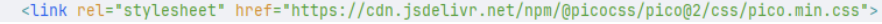
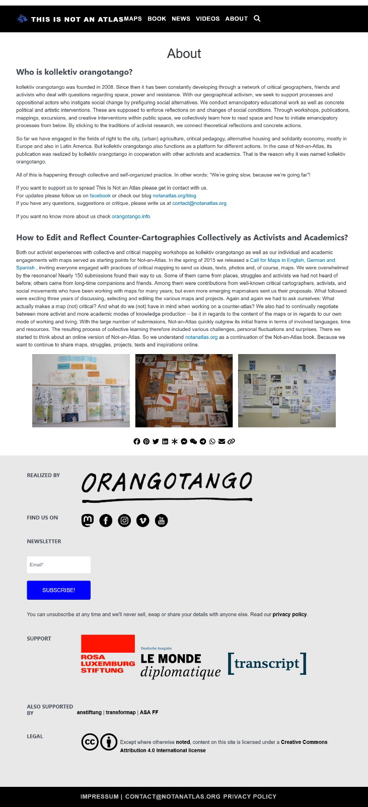

La forma en la que se escriben las páginas web y se definen sus reglas, instrucciones y funcionalidades.
En el head casi siempre incluye lo que no se ve a primera vista al entrar a una página web, como lo que necesita para funcionar, así como la que describe su identidad para los navegadores (como el título de la página, su imagen y una pequeña descripción). Por otra parte, en el body ahí está todo lo que se va a ver al entrar al sitio como texto, imágenes, etc.
Es el lenguaje con el que se diseña y se le da estilo a las páginas web
Definir cómo queremos que se vean y compongan nuestras páginas web, los colores, tamaños, tipo de letra, etc.
Se aplica creando un archivo con extensión .css y dentro del head, en el HTML donde quieras aplicarlo, se añade con la etiqueta link, siendo en el .css donde se escribiría el código CSS. Se recomienda si se va a reutilizar el estilo en otras páginas o sitios.
Se usa más si no se quiere reutilizar el estilo en otra página y se añade el código CSS en el head del html dentro de la etiqueta style (<style>).
Similar a aplicar el CSS de manera interna, solo que se aplica de etiqueta en etiqueta como atributo.
Un selector es la primera parte de una regla CSS y delimitan a qué elementos HTML les queremos aplicar estilo; la otra parte son las declaraciones (propiedades y un valor separados por dos puntos y terminados en punto y coma) dentro de su bloque, delimitado por llaves ({}) , que en conjunto permiten determinar el cómo se ven los elementos HTML (LibGuides: Basic Coding In LibGuides: CSS Section, s. f.).
Un selector nos ayuda a elegir qué clase de cosa va a estar editando el documento de CSS. Por ejemplo, el selector puede ser mi título y todo aquel formato que aplique dentro de este selector se harán para los títulos.
En este caso, se debe usar un punto para indicar que no es un selector. Después del punto se debe poner como un identificador y lo que pongamos dentro de las llaves serán nos tipos de elementos a los cuales les queremos agregar este formato (que pertenecerán a esta clase).
Aquí es como una combinación (mix & match) entre el selector y la clase. Por ende, los tipos de elemento que pertenecen a esa clase, tendrán este formato, es como un "doble filtro". ejemplo: si quiero editar un párrafo de clase highlight (y no todos los párrafos o no todos los highlight) utilizo el parrafo.highlight para modificar su formato.
Este se usa para alguna cosa muy específica, puesto que el ID no se puede repetir. Por ejemplo, si quiero editar el título general (solo habrá 1 así).Debes usar el caracter de gato (#) y poner #mi-elemento.
El grid nos ayuda a tener nuestro proyecto en cuadritos, como si fueran planos cartesianos. Es decir, opera a base de renglones (rows) y columnas (columns). Por lo que es una herramienta que se usa para diseño bidimensional, no como flexbox (unidimensional).
Es una propiedad (display) con valor (flex). En este caso se elige entre columnas o renglones (filas). Ayudan a crear un flex container. Se crea como un área (contenedor) más flexible que nos permite organizarlo de diversas maneras porque hace un ajuste dinámico de acuerdo con su tamaño.
Apply a css framework to your nonatlas clone page. (Screenshot)
 Referencias